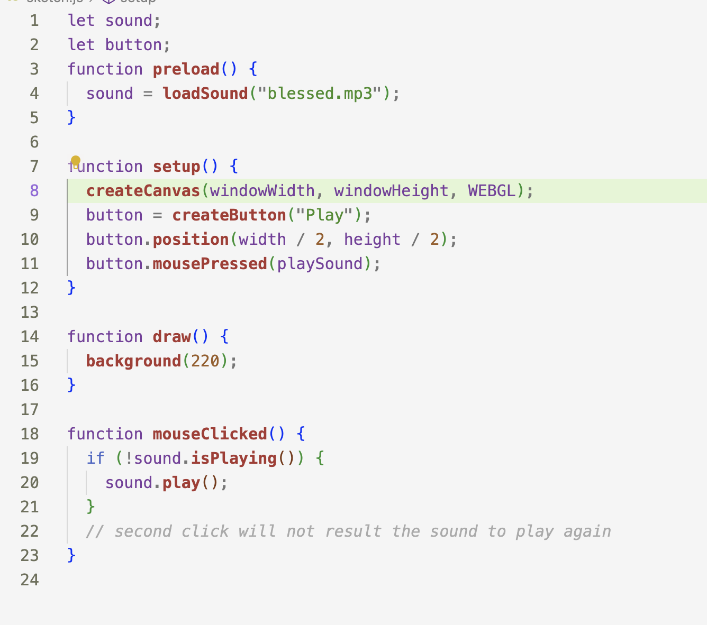
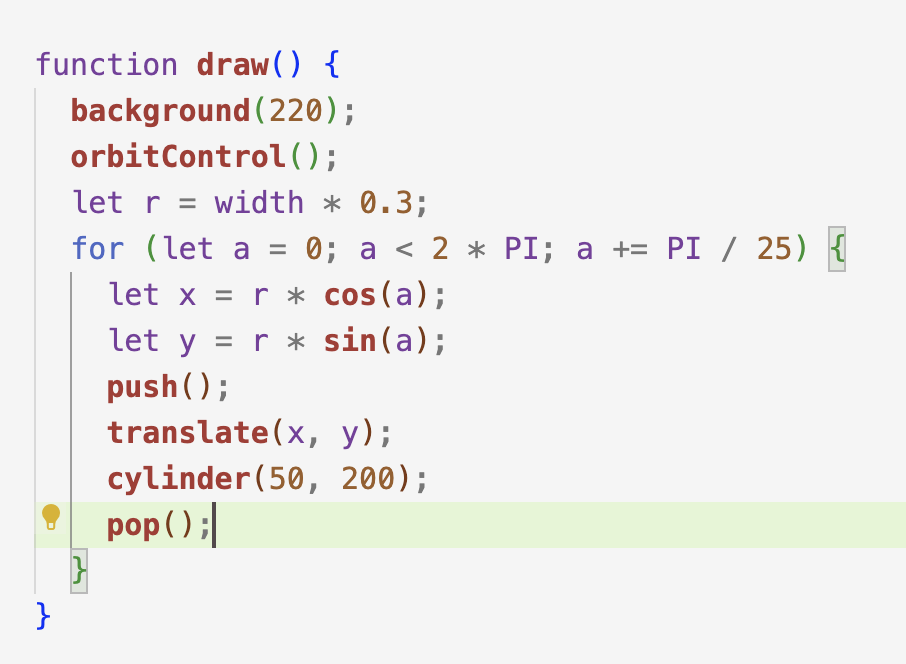
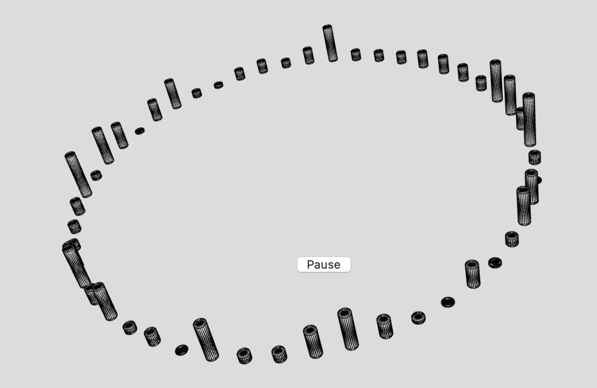

First two drawings are from openprocessing
Drawing1
Drawing2
Collage
I want to try to make a collage-style web page with processing. I want to click on the web page to display various collages. Each time I click the mouse, new collages will refresh and reappear. I first upload the image into processing and then commond+K to display the folder and set the location of the image to random. In this case, the picture will overflow a lot every time you click it. In order to ensure that the image does not overflow the screen, I changed the position to -img.width/height. This method cannot guarantee that the collage that appears every time will be beautiful, so I plan to make a few fixed ones, and then they will change with a click of the mouse.

Music Wave
This used fft to analysis the song, and transform it into visual,I preload the music first,and then used fft to analysis it. And then make the cylinder in a circle by using for loop
  